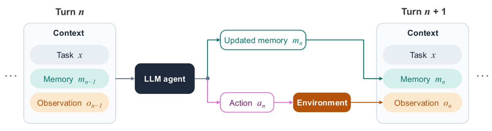
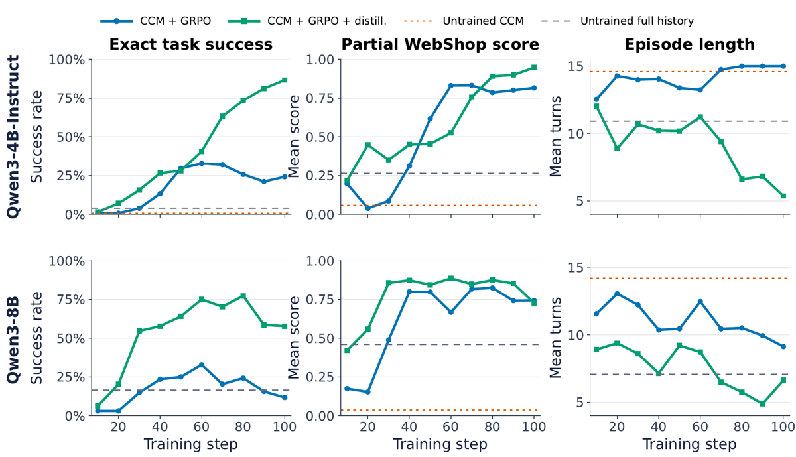
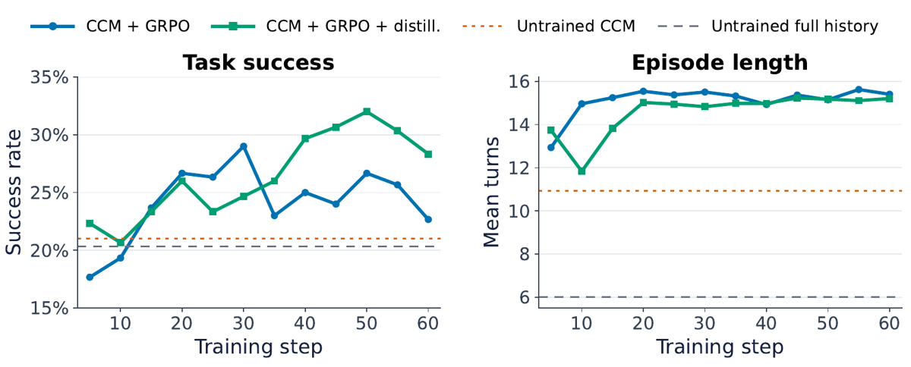

TL;DR — On pousse la compaction de contexte à sa limite : au lieu de compacter quand le contexte atteint un seuil, l'agent réécrit une mémoire à chaque tour et son prompt suivant ne contient plus que (tâche, mémoire_n, observation_n) — le transcript disparaît [§3.1, éq. 1]. Hors fine-tuning c'est une régression de performance pour 3 modèles frontier sur 4 [Tab. 1] ; les auteurs proposent alors de rattraper le retard par GRPO + une distillation on-policy depuis un teacher privilégié (copie gelée du modèle initial de l'étudiant, qui voit l'historique complet reconstruit et note les tokens d'action que l'étudiant vient d'échantillonner) [§4.1].
Claim principal, précisément — (i) CCM réduit l'input cumulé de 75,8 à 84,3 % et le pic médian de prompt d'un facteur ~3-4, au prix de −18,0 à −5,6 pts de pass@1 pour Sonnet 4.6 / Opus 4.6 / GLM-5 et de +1,1 pt pour Kimi K3 sur Terminal-Bench 2.0 [§3.2, Tab. 1] ; (ii) sur WebShop, ajouter la distillation privilégiée à CCM+GRPO fait passer l'exact success de 24,22 à 86,72 % (Qwen3-4B-Instruct) et de 11,72 à 57,81 % (Qwen3-8B) au step 100 [§4.2], et dépasse full-history GRPO pour le 4B mais pas pour le 8B ; (iii) sur Endless Terminals le gain de la distillation tombe à +3,00 pts (meilleur checkpoint) et aucune politique CCM n'atteint full-history GRPO [§4.3, Tab. 3].
Pourquoi ce papier compte pour ce corpus — c'est le papier qui attaque frontalement le point d'infra que le CLAUDE.md réclame (« la compaction de contexte transforme-t-elle la trajectoire en arbre ? ») : ici la compaction est permanente, donc le problème n'est plus un cas limite mais la structure même de la trajectoire. Et c'est le seul papier du dossier qui mesure explicitement le coût en performance de la compression de contexte sur des modèles frontier, en plus d'une recette pour le récupérer.
Origine — aucune tâche construite. Trois environnements tiers pris tels quels, aucune génération par modèle, aucune annotation humaine, coût humain nul (et aucune heure d'expert déclarée).
| Env | Train | Éval | Séparation |
|---|---|---|---|
| Terminal-Bench 2.0 [§3.2] | — (pas d'entraînement) | les 89 tâches, pass@1 | n.a. |
| WebShop (small product config) [App. E.1] | task IDs ≥ 500, échantillonnés | task IDs 0-127 fixes (128 tâches) | IDs disjoints par construction |
| Endless Terminals [App. E.1] | split fixe 2 083 tâches | 100 val + 300 test held-out | split fourni par l'env |
Volume et difficulté — aucune stratification de difficulté, aucun curriculum, aucun filtrage par pass@k, aucun seuil. 32 tâches par step × 8 rollouts = 256 trajectoires/step, 100 steps (WebShop) / 60 steps (Endless) [Tab. 6] ⇒ ≈ 3 200 et 1 920 tirages de tâches, échantillonnés sans ordre.
Données SFT/IFT avant RL — aucune. RL directement depuis les checkpoints Qwen3 publiés, thinking désactivé partout, train comme éval [App. E.2].
Contamination — traitée uniquement par la disjonction des IDs. ⚠️ Non précisé : contamination de WebShop (benchmark de 2022, massivement repris) dans le pré-entraînement de Qwen3. Atténuation : le base model non entraîné est à 3,91 % (4B) et 16,41 % (8B) d'exact success en full history [Tab. 2] — niveaux trop bas pour une fuite directe de solutions, et la fuite frapperait identiquement les quatre bras.
⚠️ Le vrai point de data est ailleurs : Endless Terminals « externalise une partie de l'état pertinent dans son sandbox persistant sous forme de fichiers, et l'état du shell survit entre les tours, permettant de récupérer l'information omise du contexte par des commandes d'inspection supplémentaires » [§4.3] — les auteurs en font eux-mêmes l'explication du fait que CCM non entraîné y égale le full history (21,00 % vs 20,33 %, soit 2 tâches sur 300 d'écart). C'est le résultat le plus important du papier pour un env juridique : CCM ne coûte rien quand l'état est ré-interrogeable, et coûte cher quand il ne l'est pas.
(x, m_{n-1}, o_{n-1}) — tâche d'origine + mémoire retenue du tour précédent + observation la plus récente. « Previous responses and observations are not included directly. Information from earlier turns therefore remains available only if the agent decides to preserve it in m_n » [§3.1].y_n = [m_n ; a_n] — un bloc mémoire puis un bloc action d'environnement [App. E.2]. La gestion de contexte est donc une action du même espace que l'action d'environnement, pas un module externe.Point dur, à charge. En CCM, le prompt du tour n+1 n'est pas un préfixe du prompt du tour n : chaque tour est une séquence indépendante (x, m_{n-1}, o_{n-1}) → [m_n ; a_n]. La trajectoire n'est donc pas une chaîne mais une forêt de segments partageant seulement x. Conséquences :
1. Le ratio d'importance par token reste formellement valide par segment (chaque token est scoré sous le contexte exact qui l'a produit), donc CCM est en réalité plus propre qu'une compaction à seuil, qui, elle, casse la chaîne au milieu de l'épisode. C'est, je pense, le vrai argument technique du papier — et les auteurs ne le formulent jamais.
2. Mais le crédit inter-tours disparaît : GRPO n'attribue qu'un reward d'épisode réparti uniformément sur tous les tokens de tous les segments.
3. Le prefix caching s'effondre : plus aucun préfixe partagé entre tours ⇒ c'est précisément ce qui fait que CCM augmente la facture API pour Opus (0,831 → 1,087 $) et Kimi (0,302 → 0,622 $) [Tab. 1].
Deux jeux de trajectoires appariées sont donnés in extenso [App. F.1 WebShop, App. F.2 Endless Terminals], avec les tableaux d'issues [Tab. 9, Tab. 10]. Sur la tâche WebShop retenue, « les politiques non entraînées échouent pendant la recherche ou la navigation, tandis que CCM + GRPO atteint le bon produit mais resélectionne de façon répétée une option déjà choisie ; CCM + GRPO + distillation suit la séquence produit–couleur–taille–achat requise » [§4.2].
Aucun juge LLM nulle part dans le reward. Tout est programmatique — et c'est un point fort, à l'inverse de la question (c) ci-dessous.
| Env | Reward | Granularité | Agrégation |
|---|---|---|---|
| WebShop [éq. 23, App. E.1] | R = 2·r_partial + 8·s, r_partial ∈ [0,1] score natif WebShop, s ∈ {0,1} exact success |
crédit partiel + bonus d'exactitude : échec ⇒ 0-2, succès exact ⇒ 10 | somme pondérée, poids 1:4 en faveur de l'exactitude |
| Endless Terminals [App. E.1] | succès binaire + pénalité auxiliaire 0,1 sur action invalide | outcome binaire | somme |
| Terminal-Bench 2.0 [§3.2] | pass@1 natif de l'env | binaire | — |
Ce que mesure r_partial, et pourquoi ça compte ici : « Partial score is the mean percentage of WebShop constraints satisfied » [Tab. 7 caption]. C'est donc une mesure de contraintes satisfaites, la quantité exacte dont le papier 2608.22752 montre qu'elle décroche du pass rate. Le papier la rapporte — et elle décroche effectivement : pour Qwen3-8B au step 100, la distillation monte l'exact success de 11,72 → 57,81 % mais baisse le partial score de 0,744 à 0,728 [§4.2]. Les auteurs écrivent la phrase et n'en tirent aucune conséquence. ⚠️ C'est la signature « plus de succès exacts, moins de contraintes satisfaites en moyenne » — exactement le failure mode que la mission (c) cherchait.
Fiabilité du vérifieur, FP/FN : non mesurée, et structurellement n.a. — les trois rewards sont exécutionnels/programmatiques, il n'y a pas de juge à valider. Aucun test d'attaque du vérifieur, aucune politique dégénérée testée contre lui.
Métriques de process ajoutées (ce sont elles qui portent l'analyse mémoire) [Tab. 2, Tab. 3] : update rate = % de tours consécutifs où la mémoire change · prefix retention = % du préfixe de la mémoire précédente conservé · taille de mémoire (moyenne, max). ⚠️ Ces trois métriques sont syntaxiques, pas sémantiques : elles mesurent si le texte a changé, jamais si l'information s'est perdue. Il n'y a aucun plafond de bruit pour elles (pas de condition identité, pas de politique « ne jamais réécrire »), donc on ne sait pas lire la valeur « 100,0 % d'update rate » du 4B [Tab. 2] : réécriture utile, ou paraphrase gratuite ?
Algorithme — GRPO (dérivé complet en App. B) plus un terme de distillation gated :
π_{θ0}), « never refreshed from the updated student » [§4.1]. Pas de teacher séparé, pas de rollout teacher, pas de trajectoire de référence.h^S_n = (o_0, a_1, o_1, …, a_{n-1}, o_{n-1}) — reconstruit depuis le rollout de l'étudiant lui-même, donc sans coût de sampling supplémentaire ; exclut l'action courante.Δ_{n,t} = stopgrad[log π_{θ0}(a_{n,t} | s⁺_{n,t}) − log π_θ(a_{n,t} | s^C_{n,t})] [éq. 2] ; gate g = stopgrad[σ(βΔ)], β = 5.L_distill = −Σ M·g·log π_θ(a | s^C) / Σ M, moyennée sur les tokens d'action valides uniquement [éq. 3] ; L_total = L_GRPO + λ·L_distill, λ = 0,01.Hyperparamètres complets [Tab. 6] — identiques WebShop / Endless sauf indication : steps 100 / 60 · tasks/step 32 · rollouts/task 8 · trajectoires/step 256 · PPO mini-batch 32 · micro-batch/GPU 1 · PPO epochs 1 · LR 1e-6 constant, warmup 0 · Adam (0,9 ; 0,999) · weight decay 0,01 · grad clip 1,0 · clip ratio 0,2 · dual-clip 3,0 · entropy coef 0,001 / 0,0 · reference-KL 0,01, estimateur low-variance · λ_distill 0,01 · β 5,0. Rollout [Tab. 8] : max tours 15/16 · température de rollout 1,0 / 0,6 · top-p 1,0 · top-k illimité · prompt étudiant 4 096 / 16 384 · prompt teacher 32 768 / 16 384 · génération/tour 1 024 (4B) ou 2 048 (8B) / 4 096 · max model length 32 768 / 20 480 · thinking désactivé.
⚠️ Le piège est dans Tab. 8 : sur Endless Terminals, prompt teacher = prompt étudiant = 16 384. Le teacher y est donc censé contenir l'historique complet dans le même budget que l'étudiant en contexte compact — soit l'historique tient (horizon court, observations courtes) soit il est tronqué au même plafond, auquel cas « l'information privilégiée » n'est plus privilégiée. Sur WebShop, à l'inverse, le teacher a 8× le budget de l'étudiant. ⚠️ Je soutiens que c'est l'explication la plus simple du contraste entre +62,50 pts (WebShop) et +3,00 pts (Endless) — et le papier ne le mentionne jamais, ni ne rapporte le taux de troncature du prompt teacher.
Stabilité — rien n'est rapporté sur ce qui a cassé, aucun incident, aucune correction. ⚠️ Pourtant les deux bras se dégradent après leur meilleur checkpoint, sur les deux envs : WebShop 4B CCM+GRPO 32,81 % (step 60) → 24,22 % (step 100) ; WebShop 8B distillation ~77 % (step 80) → 57,81 % (step 100) [Fig. 3] ; Endless CCM+GRPO 29,00 % (step 30) → 22,67 % (step 60) et distillation 32,00 % (step 50) → 28,33 % (step 60) [§4.3, Fig. 4]. Instabilité lisible dans les chiffres, jamais commentée, et aucun critère d'arrêt n'est défini : les tableaux rapportent le « best observed checkpoint ».
Dynamique — pas de courbe de reward, pas de courbe de longueur, pas de courbe d'entropie. Seules des courbes de succès par checkpoint [Fig. 2, Fig. 3].
Compute — « one node with four H100 or H200 GPUs » par run, verl + FSDP + vLLM colocalisé [App. E.3]. ⚠️ Aucun compte d'heures-GPU, aucun coût par step, et surtout aucune comparaison de compute entre les bras — alors que le bras distillation ajoute, par token d'action, un forward du teacher sur un prompt jusqu'à 8× plus long. Le surcoût n'est ni mesuré ni borné.
Le papier ne contient aucune section failure modes et ne nomme aucun reward hacking. Ce que je relève dans ses propres chiffres :
| Comportement | Où il est visible | Détecté par les auteurs ? | Corrigé ? | Correction évaluée ? |
|---|---|---|---|---|
| Mémoire gelée : CCM+GRPO apprend à ne pas réécrire sa mémoire — update rate 12,9 % (4B) et 9,1 % (8B), prefix retention 98,5 % et 99,4 % [Tab. 2] | Tab. 2 | oui, décrit (« modify their memories infrequently ») | non traité comme un failure mode ; la distillation le renverse de facto (100,0 % / 96,9 %) | non |
| Épuisement du budget de tours : CCM+GRPO 4B tourne à 15,00 tours de moyenne sur une limite de 15 [§4.2] — la politique n'arrête littéralement jamais | §4.2 | partiellement (longueur rapportée) | non | non |
| Boucle d'action : « repeatedly selects an already chosen option » | §4.2, App. F.1 | oui, en qualitatif sur une trajectoire | non | non |
| Partial score qui baisse pendant que l'exact success monte (8B : 0,744 → 0,728) | §4.2 | la phrase est écrite, l'implication n'est pas tirée | non | non |
| Oubli catastrophique : CCM+GRPO 4B perd −10,09 pts MMLU-Pro et −13,46 pts HellaSwag [Tab. 4] | oui, c'est l'objet de §4.4 | la distillation le ramène à −1,03 / −5,62 | oui, mesuré sur 3 seeds de décodage — seule case du papier avec de la variance | |
| Actions invalides (format) | pénalité 0,1 sur Endless [App. E.1] | — | — | aucun taux d'actions invalides rapporté ⚠️ |
⚠️ Crédibilité de l'absence : partiellement bonne. Avec un reward exécutionnel binaire (Endless, TB2) il y a peu de surface de hacking. Mais le reward WebShop 2r_partial + 8s est shapé, et « ramasser du partial score sans conclure » est le hack évident — la politique CCM+GRPO 4B, à 15,00/15 tours et 0,817 de partial score pour 24,22 % d'exact success [§4.2], en est précisément l'illustration. Le papier ne le nomme pas.
| Modèle | Output tokens/tâche baseline → CCM | Tours moyens baseline → CCM |
|---|---|---|
| Claude Sonnet 4.6 | 13 265 → 21 084 (+59 %) | 20,88 → 30,33 (+45 %) |
| Claude Opus 4.6 | 12 662 → 26 286 (+108 %) | 21,60 → 26,00 (+20 %) |
| GLM-5 | 10 808 → 15 184 (+40 %) | 25,90 → 32,50 (+25 %) |
| Kimi K3 | 12 659 → 35 354 (+179 %) | 14,49 → 19,02 (+31 %) |
⚠️ Lecture : CCM échange des tokens d'entrée (cachés, bon marché) contre des tokens de sortie (non cachables, 4 à 5× plus chers) et contre des tours. La réduction d'input de 75-84 % est réelle ; le bénéfice économique ne l'est que si l'on paie le KV cache en VRAM plutôt qu'à l'API — ce que le papier dit explicitement en discussion (« particularly relevant when model weights and the KV cache compete for limited GPU memory ») [§5].
| # | Chiffre / claim (abstract ou intro) | Source dans le corps | Verdict |
|---|---|---|---|
| 1 | « substantially reduces cumulative input usage and active-prompt size » | [§3.2] : −83,1 % (Sonnet), −81,5 % (Opus), −84,3 % (GLM-5), −75,8 % (Kimi) ; pic médian 9 472-17 560 → 3 243-4 280 tok. Recalcul sur [Tab. 5] : 451 006 → 76 126 ; 464 533 → 86 052 ; 480 325 → 75 481 ; 201 846 → 48 852 ⇒ −83,1 / −81,5 / −84,3 / −75,8 % | confirmé — les quatre pourcentages se recalculent exactement depuis Tab. 5 |
| 2 | « lowers task success for most models » (−11,2 / −18,0 / −5,6 pts) | [Tab. 1, Tab. 5] : 42,7 → 31,5 ; 58,4 → 40,4 ; 34,8 → 29,2 | confirmé |
| 3 | « while preserving performance for Kimi K3 » | [Tab. 1] : 56 → 57 tâches sur 89, soit 62,9 → 64,0 % | sur-généralisé : l'écart est de 1 tâche sur 89, en pass@1, sans seeds ni IC. Vrai au sens « pas de chute mesurée », faux au sens « préservation établie ». Pour comparaison, le même tableau montre Kimi passant de 14,49 à 19,02 tours moyens : la performance est tenue en dépensant 31 % de tours en plus |
| 4 | « this objective substantially improves CCM over GRPO at both evaluated model scales » (WebShop) | [§4.2] step 100 : 24,22 → 86,72 % (4B, +62,50 pts) et 11,72 → 57,81 % (8B, +46,09 pts). [Tab. 2] meilleurs checkpoints : 32,81 → 86,72 % (+53,91) et 32,81 → 77,34 % (+44,53) | confirmé quant au signe et à l'ordre de grandeur, mais les deux chiffres de tête sont sur-généralisés : ils sont pris au step 100, où CCM+GRPO a déjà décru de son pic du step 60 (32,81 %) [Fig. 3]. Le même tableau 2 donne un écart plus petit de ~9 pts (4B). Les deux conventions coexistent dans le papier sans être signalées |
| 5 | « surpasses full-history GRPO for Qwen3-4B-Instruct » | step 100 : 86,72 vs 75,78 % [§4.2] ; best observed : 86,72 vs 81,25 % [Tab. 2] | confirmé dans les deux conventions (seul claim du papier robuste au choix du checkpoint) |
| 6 | « though not for Qwen3-8B » | best observed : 77,34 vs 82,81 % [Tab. 2] | confirmé |
| 7 | « On Endless Terminals, the augmented method provides a modest improvement over GRPO » | [§4.3, Tab. 3] : 32,00 % (step 50) vs 29,00 % (step 30) = +3,00 pts, meilleurs checkpoints à des steps différents | confirmé comme énoncé, mais ⚠️ non interprétable : sur [Fig. 4] les deux courbes se croisent trois fois entre les steps 10 et 40, et l'amplitude intra-run d'un seul bras est de ~11 pts (17,7 → 29,0 %). Un écart de 3,00 pts entre deux maxima d'une run unique chacun, sans seed, est dans le bruit de la courbe elle-même |
| 8 | « with both CCM policies outperforming the untrained full-history baseline » | [Tab. 3] : 29,00 et 32,00 % vs 20,33 % | confirmé — mais le comparateur est choisi : le même tableau donne full-history GRPO à 35,33 %, au-dessus des deux. L'abstract compare au bras non entraîné sans le dire, alors que §4.3 l'écrit (« neither matches full-history GRPO ») |
| 9 | « without a separate teacher rollout or reference solution » | [§4.1] : teacher = copie gelée de θ0, historique reconstruit depuis le rollout de l'étudiant |
confirmé, c'est structurel |
| 10 | intro : « The resulting monetary savings depend strongly on provider-specific prompt-caching policies » | [Tab. 1] : CCM plus cher pour Sonnet, Opus et Kimi | confirmé, et plus fort que le claim : CCM augmente le coût dans 3 cas sur 4 |
| 11 | discussion : « improves task accuracy while mitigating forgetting of general capabilities » | [Tab. 4] : 4B WebShop MMLU-Pro −10,09 → −1,03 ; HellaSwag −13,46 → −5,62 | confirmé pour le 4B WebShop uniquement ; les auteurs le bornent eux-mêmes (« Its effect is not uniform across model scales, training environments, or evaluation tasks ») — pour le 8B WebShop, CCM+GRPO obtient le meilleur MMLU-Pro |
Verdict de cohérence : FAUX. Deux conventions de reporting (step 100 vs best observed) coexistent sans arbitrage, le chiffre de tête est pris dans la convention la plus favorable, et le comparateur de l'abstract sur Endless Terminals est le bras non entraîné alors que le bras entraîné existe et gagne.
Une seule, mais la bonne : λ_distill mis à zéro (= CCM+GRPO) est le bras principal de comparaison, et L_GRPO mis à zéro est l'App. D.1. Le terme revendiqué est donc isolé des deux côtés. Pas d'ablation de β, pas d'ablation de λ, pas d'ablation du gate (σ vs gate constant vs OPD non gated), pas d'ablation « teacher rafraîchi vs gelé », pas d'ablation « distillation sur les tokens de mémoire aussi ».
Deux tailles seulement (4B, 8B) et le signe s'inverse sur le claim principal : la distillation dépasse full-history GRPO au 4B, pas au 8B [Tab. 2]. Les auteurs ne cachent pas l'inversion mais n'en proposent aucune explication, et deux points ne font pas une tendance. ⚠️ La lecture naturelle — plus le modèle est capable, moins la béquille du contexte compact paie — irait contre la thèse et n'est pas testée.
λ_distill = 0 et L_GRPO = 0 existent tous les deux [Tab. 2, Tab. 7] ; la contribution revendiquée est encadrée.grep -niE 'github|http|release|anonymous' sur toute la source LaTeX ne renvoie rien. Le « Reproducibility statement » ne fait que renvoyer à ses propres annexes. Les prompts sont en revanche recopiés intégralement [App. A, App. E.5], ce qui est le minimum exploitable.evidence : 2/6 (ablation, eval). manquant : baselines, variance, coherence, repro.
Plausible mais fragile — à répliquer. Ce qui tient : la mesure du coût de CCM à l'inférence sur quatre modèles frontier (§3.2) est le résultat le plus solide et le plus utile du papier, parce qu'il est négatif, chiffré et réplicable depuis les prompts fournis. Ce qui ne tient pas en l'état : la supériorité de la distillation privilégiée, qui repose sur une run par condition, un checkpoint choisi a posteriori, un compute non apparié et aucune baseline de compaction triviale. Le mécanisme proposé est élégant et, lui, pleinement spécifié (éq. 1-3, App. C) — c'est l'évaluation qui est insuffisante, pas l'idée.

Ce qu'il faut voir : le prompt du tour n+1 n'est pas un préfixe de celui du tour n — c'est une séquence reconstruite. C'est ce qui rend le ratio d'importance par token valide par segment (chaque token est scoré sous le contexte exact qui l'a produit, contrairement à une compaction déclenchée au milieu d'un épisode), et c'est aussi ce qui détruit le prefix caching et donc l'avantage économique à l'API [Tab. 1].

Ce qu'il faut voir : trois choses, dont deux que le texte ne met pas en avant. (1) Aucune barre d'erreur, une courbe par condition — tout le claim repose sur des runs uniques. (2) La colonne du milieu est la plus informative : pour le 8B, le partial score (= % de contraintes WebShop satisfaites) des deux bras se rejoint à ~0,73 au step 100 alors que l'exact success les sépare de 46 pts — gagner des succès exacts ne garantit pas de satisfaire plus de contraintes. (3) Les courbes du 8B redescendent après le step 80 (distillation 77 % → 58 %) : le chiffre de tête du step 100 est pris dans la pente descendante du bras concurrent et pas du sien. Enfin, le bras full-history GRPO n'est pas tracé — seules les lignes pointillées non entraînées servent de référence visuelle, ce qui rend la figure plus flatteuse que le Tab. 2.

Ce qu'il faut voir : l'axe des ordonnées est tronqué à 15-35 %, ce qui amplifie visuellement un écart de 3 points. Les deux courbes se croisent trois fois entre les steps 10 et 40 ; l'amplitude intra-run d'un seul bras (17,7 → 29,0 %) est quatre fois le gain revendiqué. Et à droite : les deux politiques CCM entraînées saturent le budget de 16 tours (~15-16 de moyenne) alors que la baseline full-history non entraînée résout 20,33 % des tâches en ~6 tours — le gain de CCM se paie en interactions d'environnement, ce qui n'apparaît nulle part dans le compte de tokens.
| Ingrédient | Choix du papier | Équivalent juridique | Transfert | Ce qui manque |
|---|---|---|---|---|
| Source des tâches | 3 envs tiers pris tels quels, aucune tâche construite, coût humain nul [App. E.1] | Dossiers réels : mémos, due diligence, recherche de jurisprudence. Rien d'équivalent à « 2 083 tâches de terminal générées » | non | Tout. Le papier n'apporte aucune méthode de génération de tâches |
| Vérifieur | Exécutionnel binaire (Endless, TB2) ou shapé 2·r_partial + 8·s (WebShop) [éq. 23] |
Pas de vérifieur exact ; un mémo juridique n'a pas de suite de tests | non | Le papier ne touche pas au problème du vérifieur, il en hérite un gratuit |
| Harness / protocole de contexte | CCM : (x, m_{n-1}, o_{n-1}) → [m_n ; a_n], mémoire écrite comme préfixe de la réponse, dans le même espace d'action [§3.1, App. E.5] |
Un agent qui lit un dossier de 400 pages tour par tour et maintient une fiche de synthèse (parties, dates d'effet, juridiction, procédure, arrêts cités et leur statut) | adaptable — c'est le seul ingrédient réellement transférable | Rien ne contraint le schéma de la mémoire : la mémoire est du texte libre. Pour le droit il faudrait une mémoire typée et à champs obligatoires (juridiction, date d'effet, statut de l'arrêt), ce que le papier ne fait pas |
| Algo | GRPO (verl, FSDP, vLLM colocalisé) + distillation gated depuis un teacher privilégié gelé = copie de θ0 [§4.1, App. B.1] |
Un teacher qui voit le dossier complet et note les tokens de réponse d'un étudiant qui ne voit que sa fiche de synthèse | adaptable, et c'est l'idée à voler — ça fabrique un signal dense sans annotation experte et sans trajectoire de référence, exactement ce qui manque au droit | (i) Le teacher est le modèle initial, donc pas meilleur que l'étudiant en droit — il est seulement mieux informé. En juridique on voudrait tester un teacher plus fort et mieux informé. (ii) Le teacher ne note que les tokens d'action, jamais la mémoire : la fiche de synthèse ne recevrait aucun signal dense, or c'est elle qui porte les contraintes |
| Curriculum | aucun [App. E.1] | — | non | Aucun ordre, aucun filtrage par pass@k, aucune stratification par longueur de dossier — or la longueur du dossier est la variable de difficulté ici |
| Anti-hacking | aucun dispositif. Pas de section failure modes, pas de vérifieur attaqué, pas de taux d'actions invalides [§5, §6 du papier] | Le reward shapé 2·r_partial + 8·s est l'analogue direct d'un « score de contraintes satisfaites » juridique, et il est hackable de la même façon |
non | La politique CCM+GRPO 4B illustre le hack : 0,817 de partial score, 24,22 % d'exact success, 15,00/15 tours — elle ramasse des contraintes sans conclure. Personne ne le nomme |
| Mesure de fidélité | inexistante. update rate et prefix retention sont syntaxiques [Tab. 2, Tab. 3] |
« Quelles contraintes du dossier la fiche a-t-elle perdues ? » | non — et c'est le trou critique | Aucune extraction de référence, aucun vérifieur indépendant de la mémoire, aucun plafond de bruit, aucune séparation FP/FN |
<memory>Initial state: No commands have been executed yet.</memory> alors qu'il a agi — une mémoire gelée pendant que le monde change. Dans les deux cas rien ne lève d'exception : seul le vérifieur terminal, en bout de chaîne, voit l'échec. Transposé à un dossier juridique, ce sont respectivement « la fiche affirme que la clause a été vérifiée » et « la fiche garde l'état du jour 1 » — deux pannes silencieuses non détectables sans vérifieur de mémoire.La contradiction ne tient pas — parce qu'il n'y a pas de contradiction : ce papier ne mesure tout simplement pas la quantité en jeu, et le peu qu'il en montre va dans le sens de 2608.22752. Détail :
- Aucune mesure de fidélité distincte de la performance de tâche. Les trois métriques de mémoire [Tab. 2, Tab. 3] sont syntaxiques (update rate, prefix retention, taille) : elles disent si le texte a bougé, jamais si l'information a survécu.
- Qui juge ? Personne. Il n'y a aucun juge, ni dépendant ni indépendant. Le teacher privilégié pourrait servir de vérifieur de mémoire — il voit l'historique complet — mais il n'est jamais utilisé pour évaluer la mémoire, seulement pour pondérer les gradients des tokens d'action, et de toute façon c'est une copie du modèle de l'étudiant (donc « vrai par construction » au sens de la mission).
- Plafond de bruit : absent. Il n'existe aucune condition identité (« mémoire = transcript intégral à budget suffisant »), aucune politique « ne jamais réécrire ». Le full-history est bien un comparateur, mais il est lui-même tronqué à 4 096 tokens sur WebShop (pic médian ET maximum = 4 096 [Tab. 2]) : ce n'est pas un plafond, c'est une autre condition dégradée.
- FP / FN séparés : non, aucun dénominateur, aucune confusion matrix, nulle part.
- Le seul signal dans la direction de 2608.22752 est là, et les auteurs le laissent passer : Qwen3-8B, step 100, exact success 11,72 → 57,81 % mais partial score 0,744 → 0,728 [§4.2] — soit, mot pour mot dans la définition du papier, « mean percentage of WebShop constraints satisfied » [Tab. 7 caption] en baisse pendant que le succès quintuple. La phrase est imprimée sans commentaire. ⚠️ Donc ce papier reproduit le phénomène de 2608.22752 sur son propre banc d'essai et ne le voit pas — ce qui est, pour un env juridique, le plus fort argument qu'il contient.
La distillation privilégiée par différentiel de conditionnement [§4.1, éq. 2-3] : un teacher gelé = copie du modèle initial, conditionné sur l'information complète, qui note les tokens que l'étudiant vient d'échantillonner sous son contexte appauvri, avec un gate sigmoïde sur l'écart de log-prob. Coût : zéro annotation, zéro rollout supplémentaire, zéro trajectoire de référence — seulement un forward de scoring. En juridique, le « contexte appauvri » n'a même pas besoin d'être une mémoire auto-gérée : ce peut être le dossier partiel contre le dossier complet, ce qui donne un signal dense sur « quelle partie de la réponse n'est défendable que si l'on a vu la pièce 47 ».
Montage. Un env de contentieux synthétique mais vérifiable : N pièces de dossier distribuées sur T tours, dont k portent une contrainte dure extractible programmatiquement (date d'effet, juridiction, statut d'un arrêt : confirmé / infirmé / distingué). L'agent produit à chaque tour une fiche typée + une action ; en fin d'épisode, un livrable. Trois mesures séparées : (1) pass = le livrable respecte les k contraintes ; (2) fidélité = fraction des k contraintes présentes et correctes dans la fiche finale, extraite par un vérifieur programmatique indépendant du modèle, pas par un juge LLM ; (3) FP / FN séparés sur la fiche (contrainte inventée vs contrainte perdue), avec dénominateurs distincts.
Quatre bras à budget de tokens de prompt et de tours strictement identiques : (a) plafond de bruit : contexte complet non tronqué (le budget est dimensionné pour qu'il tienne) ; (b) troncature triviale : les N derniers tours, le reste jeté ; (c) résumé périodique naïf : compaction tous les p tours, au même budget de mémoire que (d) ; (d) CCM : mémoire réécrite à chaque tour. Puis, sur le meilleur des quatre, deux sous-bras : GRPO seul vs GRPO + distillation privilégiée, à compute apparié (on compte les forwards du teacher et on donne à GRPO seul les steps correspondants), 3 seeds d'entraînement minimum, et un critère d'arrêt déclaré à l'avance (pas de « best observed checkpoint »).
Résultat attendu si la thèse du papier tient : (d) domine (b) et (c) à budget de mémoire égal, et l'ajout de la distillation améliore à la fois pass et fidélité, en réduisant surtout les FN (contraintes perdues).
Résultat qui falsifie — et c'est l'issue que je juge la plus probable, trois falsifiants indépendants :
1. (b) ou (c) égale (d) à budget apparié ⇒ le gain revendiqué est un effet de budget, pas du mécanisme appris. Le papier ne peut pas écarter cette issue : il n'a testé ni (b) ni (c).
2. pass monte pendant que fidélité stagne ou baisse, et le gain de pass vient d'une baisse de FP sans baisse de FN ⇒ la politique apprend à ne plus écrire de contraintes plutôt qu'à les préserver, et le pass rate masque l'omission. Le papier montre déjà cette signature sur Qwen3-8B (partial score 0,744 → 0,728).
3. (a), le plafond de bruit, reste significativement au-dessus de tous les autres à tours appariés ⇒ CCM n'est pas « un paradigme d'inférence viable » mais une dégradation acceptée sous contrainte de VRAM. Les propres chiffres du papier pointent déjà là : full-history GRPO gagne sur Endless (35,33 vs 32,00 [Tab. 3]) et sur WebShop 8B (82,81 vs 77,34 [Tab. 2]).
« Pour Gemini Law, acceptons-nous de perdre l'auditabilité de la provenance ? » — CCM supprime le transcript : au tour n, il ne reste de la pièce 47 que ce que le modèle a recopié. Si un mémo cite un arrêt, il n'existe plus de trace vérifiable que cet arrêt vienne du dossier plutôt que des poids. En contentieux, cette trace est le livrable. Corollaire opérationnel, et c'est la vraie question de design : doit-on faire du droit un environnement « à état externalisé » ? Le papier montre que CCM ne coûte presque rien sur Endless Terminals (21,00 vs 20,33 % [Tab. 3]) et que les auteurs l'attribuent au fait que « l'état pertinent est externalisé dans le sandbox sous forme de fichiers […] permettant de récupérer l'information omise par des commandes d'inspection supplémentaires » [§4.3] — alors qu'il coûte −18 pts sur Terminal-Bench 2.0 et détruit les petits modèles sur WebShop (0,78 % / 0,00 % [Tab. 2]). La conclusion actionnable est que la gestion de contexte n'est pas une propriété de la politique mais du couple (politique, ré-interrogeabilité de l'environnement) : si le harness juridique donne à l'agent des outils de relecture indexée du dossier (grep sur les pièces, retrieval sur la jurisprudence, re-ouverture d'une pièce par identifiant), alors une mémoire compacte devient peu risquée ; sans eux, chaque contrainte non recopiée est définitivement perdue. Investir dans la ré-interrogeabilité plutôt que dans la politique de mémoire est, d'après ce papier, le meilleur rapport effet/effort — et c'est une décision d'infra, pas de post-training.